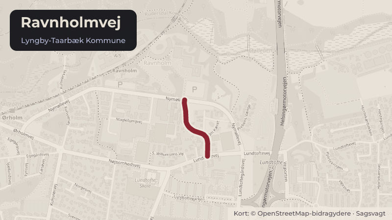

På dagsordenen 3. november, Teknik- og Miljøudvalget, Lyngby-Taarbæk
Afgørelse om støjklage vedrørende kunstgræsbanerne Ravnholmvej 11
Forvaltningen har den 17. oktober 2025 modtaget en afgørelse fra Miljø- og Fødevareklagenævnet, som ophæver og hjemviser kommunens påbud fra 2023 om brugstider for to kunstgræsbaner i Lundtofte. I december 2025 udgav Miljøstyrelsen en opdateret vejledning om støj fra idrætsanlæg.
Bydele i sagen: Lundtofte
Steder i sagen: Ravnholmvej

Kort fortalt
- Hvem
- Teknik- og Miljøudvalget, Lyngby-Taarbæk Kommune
- Hvornår
- Tirsdag 3. november 2026
- Status
- På dagsordenen. Sagen behandles på mødet.
- Næste skridt
- Hvis Teknik- og Miljøudvalget beslutter, at der foreligger proportionelle foranstaltninger, vil forvaltningen (miljømyndigheden) meddele varsel om påbud om nedbringelse af støjbelastningen.
Hvad kan du gøre?
- Skriv til politikerne
- Udvalgets møder er lukkede, men du kan skrive til medlemmerne før mødet tirsdag 3. november 2026. Du finder dem på ltk.dk.
Læs hele sagen Kommunens egen tekst
Indstilling
Forvaltningen foreslår, at
1. forvaltningen meddeler påbud svarende til den nuværende brug af kunstgræsbanerne.
2. der orienteres om sagen.
Problemstilling
Teknikudvalget besluttede den 14. marts 2023, at forvaltningen som miljømyndighed skulle
meddele påbud om støj fra kunstgræsbaner på Lundtofte Idrætsanlæg, hvor der blev meddelt
spilletider svarende til den daværende brug.
Partshøringen af påbuddet afstedkom en række bemærkninger fra naboerne til
idrætsanlægget. Teknikudvalget besluttede den 22. august 2023 at påbud skulle meddeles
som besluttet af Teknikudvalget den 14. marts 2023. Efterfølgende blev påbuddet påklaget til
Miljø- og Fødevareklagenævnet.
Afgørelse fra Miljø- og Fødevareklagenævnet
Miljø- og Fødevareklagenævnet traf 17. oktober 2025 beslutning om at hjemvise sagen til
fornyet behandling i Forvaltningen, jf. bilag 1.
Miljø- og Fødevareklagenævnet har i sin afgørelse bl.a. anført:
”Miljø- og Fødevareklagenævnet er på den baggrund enigt med klager i, at de påbudte
driftstider kun i mindre grad medfører indskrænkninger af brugen af banerne i de perioder, hvor
der er konstateret væsentlige støjulemper, hvorfor effekten af de påbudte vilkår må antages at
være begrænset. Det var derfor Miljø- og Fødevareklagenævnets vurdering, at der også med
de påbudte driftstider vil være væsentlige støjulemper for omgivelserne fra aktiviteterne på
banen.
Nævnet skriver i sin afgørelse, at "Nævnet finder, at kommunen efter miljøbeskyttelseslovens §
42 er forpligtet til at give et påbud, hvorved der reelt sker en reduktion af de væsentlige
støjulemper."
Indledningsvist bemærkes det, at Miljøbeskyttelseslovens § 42, stk. 1 og 3, anvender ordet
"kan", hvilket indikerer en skønsmæssig beføjelse snarere end en absolut pligt. Nævnet
strammer, efter Forvaltningens vurdering, lovens ordlyd ved at konkludere, at kommunen er
"forpligtet" til at gribe ind overfor organiseret idræt. Vurderingen af, at kommunerne har en
udvidet skønsmargin bekræftes efter Forvaltningens opfattelse i den nye vejledning om støj fra
idrætsanlæg, som Miljøstyrelsen i december 2025 udgav, jf. nedenfor. Det er Forvaltningens
opfattelse, at kommunen - også før den nye vejledning trådte i kraft i december 2025 - havde
en vid skønsmargin i vurderingen af, om et påbud er nødvendigt, og hvilke foranstaltninger der
skal iværksættes. Kommunen skal dog sikre, at dens vurdering er baseret på et tilstrækkeligt
oplyst grundlag, og at proportionalitetsprincippet overholdes. Dette indebærer, at kommunen
skal undersøge de tekniske, driftsmæssige og økonomiske muligheder for at reducere
støjulemperne.
Opdateret vejledning om støj fra idrætsanlæg
I december 2025 udgav Miljøstyrelsen vejledning nr. 81, Støj fra idrætsanlæg. Den
væsentligste ændring i denne vejledning i forhold til tidligere vejledninger er, at vurderingen af,
om et idrætsanlæg medfører væsentlige støjgener, ikke skal tage udgangspunkt i
grænseværdierne i virksomhedsstøjvejledningen fra 1984 (ekstern støj fra virksomheder,
vejledning nr. 5/1984) eller i afsnittene vedrørende støj i kunstgræsbanevejledningen.
Miljøbeskyttelseslovens § 42, stk. 3, gælder dog fortsat, og kommunen kan stadig give påbud,
hvis den vurderer, at et idrætsanlæg medfører væsentlige støjulemper for omgivelserne.
Miljøstyrelsen præciserer i vejledningen, at kommunen skal foretage tre vurderinger:
1. Vurdering af om der foreligger væsentlige støjgener
2. Undersøgelse af mulige støjreducerende foranstaltninger
3. Vurdering af om den enkelte foranstaltning er proportional
Kommunen skal således foretage en vurdering af støjgenens omfang på baggrund af de
almindelige forvaltningsretlige regler (oplyst grundlag, lighed, saglighed m.v.). og herefter
afveje hvilke krav til foranstaltninger, der er miljømæssigt begrundede og rimelige at stille ud
fra proportionalitetsprincippet. Den konkrete proportionalitetsvurdering skal foretages på
baggrund af en afvejning af på den ene side omfanget af de konkrete støjgener og hensynet til
naboerne, og på den anden side effekten af de støjreducerende foranstaltninger, de
økonomiske omkostninger forbundet hermed, samt de samfundsmæssige interesser, der
generelt vil være forbundet med muligheden for at udøve idræt i bynære områder og på
relevante tidspunkter.
Ad 1) Vurdering af, om der foreligger væsentlige støjgener
Det præciseres i vejledningen, at vurderingen af om støjen er væsentlig, skal ske på baggrund
af et kommunalt skøn. Miljøstyrelsen understreger, at begrebet "væsentlige ulemper", der
stammer fra Miljøbeskyttelseslovens § 42, stk. 3 har til hensigt at undtage ulemper eller
forureninger, som er uundgåelse i et moderne samfund og at ulemperne må overskride et vist
acceptabelt minimum, før indgreb bliver aktuelt. Forvaltningen skal dermed foretage et skøn af,
om støjen fra idrætsanlægget medfører væsentlige støjgener, som ikke skønnes at være
acceptable for naboerne, og at der på den baggrund skal overvejes udarbejdet
støjreducerende foranstaltninger. Til vurderingen af, om der kan være væsentlige støjgener,
kan kommunerne i deres skøn f.eks. lægge vægt på følgende punkter:
Anlæggets fysiske udformning
Varighed, hyppighed og tidspunkter på døgnet, hvor støjen forekommer
Afstand til boliger
Naboområdernes støjfølsomhed
Særlige driftstider og forskellige typer af idræt
Kommunerne kan hertil vælge at inddrage målte eller beregnede støjniveauer i vurderingerne.
Forvaltningen understreger, at der ikke findes nogen vejledende grænseværdier for støj fra
idrætsanlæg. Ligeledes er forvaltningen ikke bekendt med retspraksis fra klagenævn eller
domstole, der kan bruges som retningslinje for, hvornår et givent støjniveau er til væsentlig
gene. Der skal således, som nævnt, foretages en samlet vurdering og der tillægges
kommunerne en vid skønsmargin.
Det bemærkes, at Miljø- og Fødevareklagenævnet i sin afgørelse anmoder kommunen om at
overveje, om der bør gennemføres en støjmåling af karakteren "miljømåling - ekstern støj".
Forvaltningen har været i dialog med flere akkrediterede firmaer med ekspertise inden for
støjmåling. Der er faglig konsensus om, at det ikke kan lade sig gøre, at gennemføre en
"miljømåling - ekstern støj", når der er tale om støj fra menneskelig aktivitet, herunder i dette
tilfælde fodboldspil. Det har derfor ikke været muligt at få foretaget en sådan støjmåling.
Forvaltningen har i stedet fået gennemført en anden type støjmåling jf. nedenfor.
Ad 2) Undersøgelse af mulige støjreducerende foranstaltninger
Hvis kommunen vurderer, at et idrætsanlæg giver anledning til væsentlige støjulemper, skal
kommunen foretage en vurdering af, hvilke mulighede der er for at etablere støjreducerende
foranstaltninger på idrætsanlægget. Undersøgelsen skal belyse tekniske og praktiske
muligheder for støjdæmpning, effekten af de forskellige tiltag, samt omkostningerne forbundet
hermed.
Der er ikke noget krav i miljøbeskyttelsesloven § 42, stk. 3, om, at støjen skal ned på en
grænseværdi, men kun at kommunerne undersøger de tekniske, driftsmæssige, og
økonomiske muligheder, der er for at begrænse de væsentlige støjulemper der måtte være.
Der kan derfor være situationer, hvor der ikke foretages støjdæmpende foranstaltninger, hvis
kommunen vurderer, at løsningerne ikke er teknisk og/eller økonomisk proportionale.
Ad 3) Vurdering af om den enkelte foranstaltning er proportionel
Den konkrete proportionalitetsvurdering skal foretages på baggrund af en afvejning af på den
ene side omfanget af de konkrete støjgener og hensynet til naboerne, og på den anden side
effekten af de støjreducerende foranstaltninger, de økonomiske omkostninger forbundet
hermed, samt de samfundsmæssige interesser, der generelt vil være forbundet med
muligheden for at udøve idræt i bynære områder og på relevante tidspunkter.
Beslutningsrum
Der skal med nærværende sag indledningsvist foretages en vurdering af om der foreligger en
væsentlig støjgene. Idet der ikke findes megen retspraksis efter præcisionen af reglerne med
den opdaterede vejledning om støj fra idrætsanlæg, og idet det er første gang LyngbyTaarbæk Kommune træffer afgørelse herom efter opdatering af vejledningen, vil beslutningen
også i et vist omfang lægge linjen for kommende afgørelser på området.
Forvaltningen vurderer, jf. nedenfor, at der kan være en væsentlig gene. Idet forvaltningen ikke
kan afvise, at der foreligger en væsentlig gene, har forvaltningen også udarbejdet en
beskrivelse af potentielle støjreducerende tiltag og foretaget en proportionalitetsvurdering. Det
understreges, at der er et politisk beslutningsrum til at foretage den samlede afvejning af
proportionalitet i forhold til de beskrevne støjreducerende tiltag.
Løsninger
Vurdering af om der foreligger en væsentlig støjgene
Forvaltningen har udarbejdet en vurdering af, om der foreligger en væsentlig støjgene. Til brug
for vurderingen har forvaltningen blandt andet taget følgende skridt:
Gennemført flere tilsyn på arealerne i perioden marts 2026 - juli 2026
Fået udført støjmålinger i marts/april 2026 (bilag 2.1) og senere fået udarbejdet
støjudbredelseskort (se bilag 2.2 og 2.3) af eksternt firma (Force Technology)
Afholdt møde med beboere i området den 9. april 2026
Støjmålingerne er foretaget af Force Technology i marts/april 2026. Lydmåleren har været
monteret på nordgavlen af S. Willumsens Vej 20 ca. 70 meter fra banens midte. Støjniveauet
er målt til gennemsnitligt at være mellem 52 - 57 dB(A) med maksimalværdier (impulser) op til
80 dB(A). Som følge af den mulige gene har forvaltningen efterfølgende bedt Force
Technology udarbejde egentlige støjudbredelseskort for både at kunne estimere støjen mere
præcist og vurdere effekten af eventuel etablering af støjskærm.
Støjudbredelseskortene (jf. bilag 2.2. og 2.3.) viser støjgener på op imod 65 dB(A) ved de mest
støjbelastede naboer på Ravnholmvej. Ved de nærmeste naboer på S. Willumsens Vej
(etageboligerne) er der en støjbelastning på mellem 55-60 dB(A) på facaderne ind mod
fodboldbanen.
Forvaltningen bemærker, at støjmålingerne ikke højde for impulsstøj (stød, råb o.lign.). I andre
typer af virksomhedsstøj vil man normalt tillægge et "impulstillæg" på 5 dB(A) til den
gennemsnitlige støjbelastning.
I forbindelse med de gennemførte tilsyn, har forvaltningen vurderet, at støjen var som man kan
forvente ved idrætsanlæg. Støjen var karakteriseret ved råb fra spillerne samt støj fra spark til
bolde og støj, når boldene rammer bander, målstolper og trådhegn omkring banen.
Baggrundsstøjen fra trafik var tydeligt hørbar under tilsynene.
I forbindelse med dialogen med naboer til fodboldbanerne blev der fra naboernes side blandt
andet fremført at de oplevede støjgenerne som væsentlige i hele området omkring banerne.
De fremmødte boede på forskellige veje omkring banerne. Der var en oplevelse af, at generne
var tiltaget efter etableringen af 11-mands kunstgræsbanen, hvilket understøttes af, at der på
denne bane er en høj belægning i løbet af vinterhalvåret, jf. også nedenfor.
Ud fra de gennemførte målinger og tilsyn er det forvaltningens samlede vurdering, at støjen fra
idrætsanlægget udgør en væsentlig støjgene for især de nærmeste naboer. Det drejer sig især
om adresserne Ravnholmvej 13C og 15 samt nærmeste omkringliggende naboer, hertil
vurderer forvaltningen, at der er en væsentlig støjgene på S. Willumsens Vej 14, 16, 18, 20, 22,
24 (etageboligerne) samt S. Willumsens Vej 15. I vurderingen indgår særligt, at støjgenerne
forekommer i eftermiddags- og aftentimerne, hvor beboerne typisk opholder sig hjemme og ved
kampe i weekenden. Det kunne samtidigt konstateres, at støjniveauet er højest sidst på
aftenen, hvor det i højere grad er voksne spillere, mens støjen er lidt mindre i
eftermiddagstimerne, hvor børn- og ungdomsspillere i højere grad træner. Herudover
indeholder støjen fra spillet råb og impulsstøj fra bl.a. bolde, der kan virke generende. Samtidig
bemærker forvaltningen, at de nærmeste boliger både på S. Willumsens Vej og Ravnholmvej
ligger umiddelbart op ad idrætsanlægget ved hhv. den store kunstgræsbane (S. Willumsens
Vej) og den lille kunstgræsbane (Ravnholmvej).
Undersøgelse af mulige støjreducerende foranstaltninger
Forvaltningen har undersøgt, hvilke støjreducerende foranstaltninger, der vil kunne reducere
støjgenerne fra kunstgræsbanerne i Lundtofte. Idet banerne allerede er etableret, har
forvaltningen fokuseret på tiltag, der enten reducerer benyttelsen af banerne eller fysisk kan
reducere støjens udbredelse fra banerne til de omkringliggende boligområder. Forvaltningen
har på den baggrund undersøgt følgende:
1. Ændring i spilletider
2. Reducering i spilletider
3. Etablering af støjskærme
1.Reduktion af spilletider
For at reducere støjens samlede omfang, vil det være en mulighed at reducere de mulige
spilletider. På nuværende tidspunkt er det tilladt at at benytte banerne i følgende tidsrum:
Dag
Spilletider
Stor bane
Lille bane
Sommer
Mandag-torsdag
Fredag
Lørdag-søndag
Vinter
Mandag-torsdag
Fredag
Lørdag-søndag
Særligt i vinterhalvåret er der en høj belægning på kunstgræsbanerne, idet kommunens
græsbaner ikke er i brug i vinterhalvåret.
Ved at indskrænke spilletiderne vil den samlede støjbelastning reduceres i omfang. Hvis det
antages, at det er de samme hold og samme mængde af spillere, der bruger banen i et
reduceret tidsrum, vil lydtrykket i forbindelse med træning og kamp dog være det samme dog i
en kortere periode. Forvaltningen vurderer, at der skal en forholdsvis omfattende
indskrænkning af spilletiderne, særligt i aftentimerne, for at reducere støjen til et niveau, der
ikke fortsat vil kunne vurderes at være til væsentlig ulempe.
Seks fodboldklubber deles i vintersæsonen 2026 om seks 11-mandsbaner og en 8-mandsbane
fordelt på tre forskellige lokationer i kommunen (Sorgenfri, Lundtofte og Lyngby Idrætsby). Til
sammenligning er kapaciteten ca. 20 græsbaner + kunstgræsbanerne i sommersæsonen på
tværs af kommunen. Den lavere kapacitet i vintersæsonen betyder også, at der er en stor
belægning og efterspørgsel på banerne.
Forvaltningen vurderer endvidere, at det ikke vurderes muligt at rykke fodboldspillet indendørs,
da det dels vil påvirke fodboldklubbernes mulighed for at træne og samtidig lægge en stor
belastning på kommunens indendørskapacitet til gene for mange andre idrætsgrenes
træningsmuligheder.
2. Ændring af spilletider
En teknisk mulighed til at fordele støjgenerne anderledes end i dag, er at flytte noget af den
mest støjende aktivitet - seniorspillernes træning - til tidligere på dagene, og lægge børn- og
ungdomsspillernes senere på dagen. Folkeoplysningsloven og kommunens principper for
udlån og leje af kommunale lokaler og faciliteter, stiller dog krav om at prioritere børn og unge
op til 25 år før voksne. Det betyder, at forvaltningen skal sørge for at børn og unge får
træningstider før voksne. Det betyder også, at træningstidspunktet er vigtigt, og at man ikke
f.eks. kan lade voksne træne om eftermiddagen og børn om aftenen. I praksis vurderer
forvaltningen også, at det vil være til stor gene for fodboldklubberne og deres spillere, hvis der i
væsentlig grad bliver justeret i, hvornår senior hhv. børne- og ungdomsspillere trænere.
3. Støjskærme
Der henvises til notat om undersøgelse af støjskærme som støjreducerende foranstaltning
(bilag 3) for forvaltningens samlede uddybende vurdering, samt til de indhentede bidrag fra
Force Technology om effekten af støjskærme, bilag 2.2. og 2.3.
Det vil være teknisk muligt at etablere en eller to støjskærme på følgende placeringer:
Støjskærm A - En øst-vest gående støjskærm langs skellet mellem 11-mands
kunstgræsbanen, som trækkes helt fra Lundtoftehallen og forbi etageboligerne på S.
Willumsens Vej. Støjskærmen vil være ca. 131 meter lang.
Støjskærm B - En nord-syd gående støjskærm langs 8-mands kunstgræsbanen, således
at boligerne på Ravnholmvej skærmes fra støjen fra fodboldbanerne
Støjskærm A: For at støjskærmen vil have en tilstrækkelig effekt, vurderes det at Støjskærm A
skal være 6 meter høj og ca. 131 meter lang. En sådan skærm vil koste ca. 3,6 mio. kr. at
etablere, idet det dog bemærkes at dette tal er behæftet med en vis usikkerhed.
Omkostningerne omfatter ud over selve entreprisearbejdet til levering og montering af
støjskærme også udgifter til rådgivning, projektledelse samt uforudsete udgifter i anlægsfasen.
Overslaget er baseret på generelle enhedspriser og tager ikke højde for de konkrete
stedsspecifikke forhold langs strækningen. Der kan derfor være behov for supplerende
foranstaltninger, som ikke er indeholdt i de angivne anlægsomkostninger. Eksempelvis vil
etablering af adgangslåger til drift og vedligeholdelse kunne medføre merudgifter.
Forvaltningen vurderer umiddelbart, at en støjskærm på 6 meters højde vil fremstå markant i
området.
Støjskærm B: Støjskærm B vil være effektiv til at dæmpe lyden for de mest generede naboer
allerede ved 3 meters højde. Den endelige projektering af en eventuel skærm vil kunne
tilpasses, så den må forventes opnår en højere effekt end i beregningerne, ved f.eks. at lad
skærmen fortsætte nord om 8-mands banen. En rent nord-syd-gående skærm langs øst-siden
af 8-mands banen vil koste ca. 1,2 mio. kr. i anlægsudgifter.
Forvaltningen vurderer, at en skærm, selv ved 3 meters højde, kan skabe væsentlige
skyggegener for de nærmeste naboer.
Endvidere er der skønnet en årlig driftsudgift til vedligeholdelse af støjskærmene på ca.
Forvaltningen bemærker, at der for begge skærme kan være forhold i både planlov,
bygningsreglement og hegnslov, der kan være forhindrende for etableringen af en eller begge
skærme. En endelig afgørelse af disse forhold beror på en konkret vurdering af en endelig
projektering.
Proportionalitetsvurdering
Den konkrete proportionalitetsvurdering skal foretages på baggrund af en afvejning af på den
ene side omfanget af de konkrete støjgener og hensynet til naboerne, og på den anden side
effekten af de støjreducerende foranstaltninger, de økonomiske omkostninger forbundet
hermed, samt de samfundsmæssige interesser, der generelt vil være forbundet med
muligheden for at udøve idræt i bynære områder og på relevante tidspunkter.
Forvaltningen er ikke bekendt med ny nævnspraksis efter Miljøstyrelsens opdaterede
vejledning om støj fra idrætsanlæg udkom i december 2025. Der er derfor en vis usikkerhed
forbundet med, hvordan Miljø- og Fødevareklagenævnet vil fortolke kravene til en
proportionalitetsvurdering. Forvaltningen bemærker, at Miljøstyrelsen i vejledningen
vedrørende proportionalitetsvurderinger skriver at: "Der er ikke noget krav i
miljøbeskyttelsesloven § 42, stk. 3, om, at støjen skal ned på en grænseværdi, men kun at
kommunerne undersøger de tekniske, driftsmæssige, og økonomiske muligheder, der er for at
begrænse de væsentlige støjulemper der måtte være. Der kan derfor være situationer, hvor
der ikke foretages støjdæmpende foranstaltninger, hvis kommunen vurderer, at løsningerne
ikke er teknisk og/eller økonomisk proportionale.
Støj fra et eksisterende idrætsanlæg er ofte vanskelig at mindske, især hvis støjgenen består
af råb fra spillere og tilskuere. Derfor vil et eventuelt påbud fra myndighederne bestå i krav om
driftsmæssige eller tekniske løsninger, som nævnt i afsnit 5, og ikke i fastsættelse af konkrete
støjgrænser. "
Forvaltningen vurderer, at det ligger inden for den kommunale skønsmargin under de givne
forhold, at vurdere, at det ikke er proportionelt at etablere et eller begge støjhegn og/eller
indskrænke spilletiderne yderligere. Forvaltningen bemærker, at der er en vis procesrisiko ifm.
en eventuel klage til Miljø- og Fødevareklagenævnet, idet forvaltningen ikke er bekendt med ny
klagepraksis fra nævnet efter den opdaterede vejledning om støj fra idrætsanlæg.
På den baggrund foreslår forvaltningen, at Teknik- og Miljøudvalget beslutter, at der ikke
foreligger proportionelle støjreducerende foranstaltninger og at forvaltningen meddeler påbud
svarende til den nuværende brug af banerne.
Hvis Teknik- og Miljøudvalget beslutter, at der vurderes at være proportionelle foranstaltninger,
vil forvaltningen meddele varsel om påbud om nedbringelse af støjbelastningen.
Strategisk ramme
Ingen bemærkninger.
Økonomi
Sagen har i sig selv ingen bevillingsmæssige konsekvenser. Evt. omkostninger ved etablering
af støjskærm vil være væsentlige. Omkostninger vil fremgå af en evt. efterfølgende sag til
beslutning i de relevante udvalg.
Videre proces
Hvis Teknik- og Miljøudvalget beslutter, at der foreligger proportionelle foranstaltninger, vil
forvaltningen (miljømyndigheden) meddele varsel om påbud om nedbringelse af
støjbelastningen. Herefter vil forvaltningen skulle tage stilling til håndtering af påbuddet
herunder hvilke foranstaltninger, der iværksættes.
Hvis Teknik- og Miljøudvalget beslutter, at der ikke vurderes at være proportionelle
foranstaltninger, vil forvaltningen (miljømyndigheden) meddele et varsel om påbud om brug af
banerne svarende til den aktuelle brug. Varslet om påbud skal forinden i partshøring.
Når et påbud er meddelt vil der være mulighed for at påklage det til Miljø- og
Fødevareklagenævnet.
Kilde: Lyngby-Taarbæk Kommune, Teknik- og Miljøudvalget, dagsorden fra mødet tirsdag 3. november 2026, punkt 12. Læs den originale sag hos kommunen.